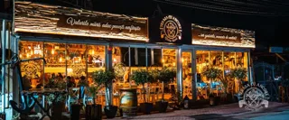
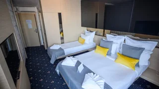
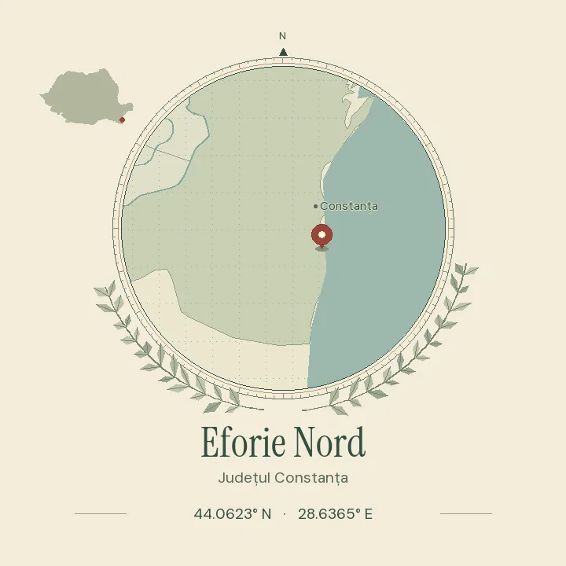
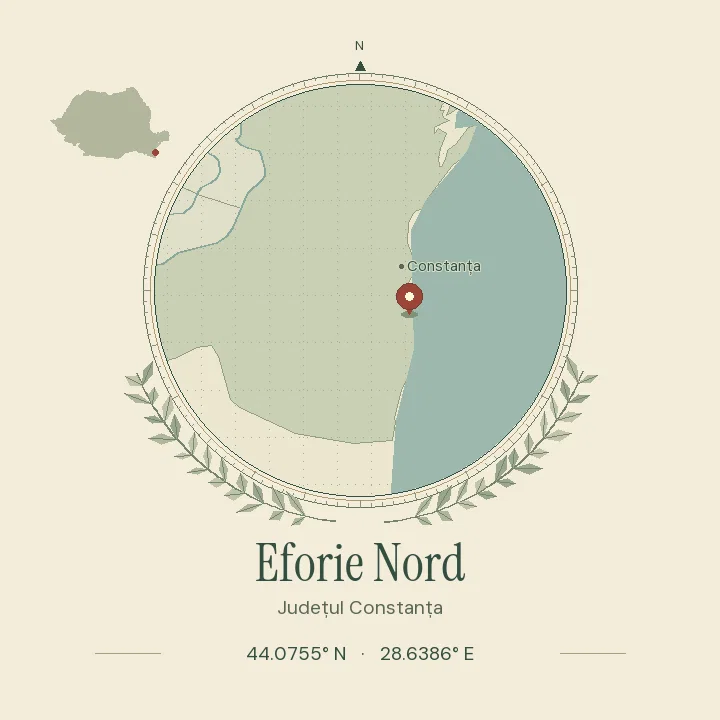
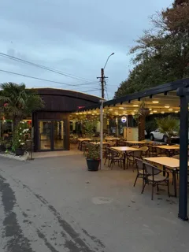
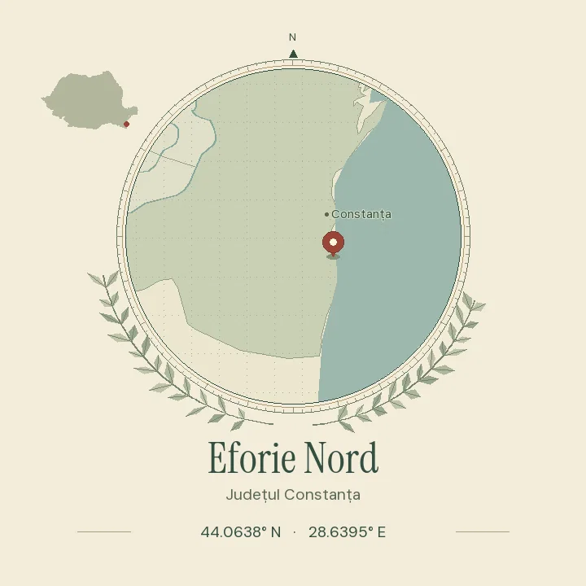
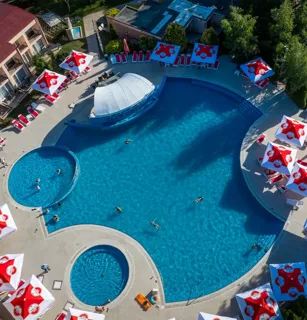
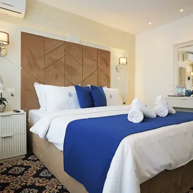

Locații de nuntă în Eforie Nord
- locații în director
- 14
- cu cazare în registrul SITUR
- 2
- medie ponderată Google
- 4,2 / 5
- evaluări Google
- 23.470
Cum alegi o locație în Eforie Nord
În Eforie Nord poți începe comparația cu Blue Sky Hotel Eforie Nord (hotel), Terasa cu Ancore (restaurant), Aqvatonic Balneo Spa - Steaua de Mare (hotel). Aceste proprietăți apar în primele poziții când luăm în calcul împreună nota și numărul de evaluări Google. Salvează adresele care vă interesează pentru a le așeza apoi alături în fișa de comparare a ofertelor.
Pentru partea de afară, avem o descriere a spațiului folosit la evenimente la Ana Hotels Europa — Cununie și recepție de nuntă în grădină. La vizionare, cere schița pentru numărul vostru de persoane, inclusiv locul unde vor sta muzicienii și pe unde intră invitații.
Dacă vin rude de departe, Ana Hotels Europa are o unitate de cazare asociată în registrul SITUR. Înregistrarea pentru Ana Hotels Europa Eforie Nord cuprinde 442 de locuri de dormit în 221 de spații de cazare. Întreabă câte camere pot fi păstrate pentru aceeași noapte înainte să trimiți invitaților detaliile de rezervare.
Dacă vrei să vezi două proprietăți în aceeași zi, poți continua de la Blue Sky Hotel Eforie Nord spre Aybo Garden din Agigea. Punctele lor sunt la 3,3 km în linie dreaptă. Deschide traseul înainte să fixezi ora celei de-a doua vizite, mai ales dacă grupul se deplasează cu autocarul.
Locații pentru vizionare
Ordinea ține cont de nota Google și de numărul evaluărilor. Cum calculăm ordinea

Fotografie a locației · Sursa fotografiei Eforie Nord · Hotel
Blue Sky Hotel Eforie Nord
Blue Sky Hotel Eforie Nord, Eforie Nord. La Blue Sky Hotel, un oaspete descrie un sejur liniștit și primirea atentă a gazdelor.
Strada Meduzei 1, 905350 Eforie Nord+40 739 914 704
Fotografie a locației · Sursa fotografiei Eforie Nord · Restaurant
Terasa cu Ancore
Un oaspete care a luat masa cu familia la Terasa cu Ancore își amintește de servirea personală și de atmosfera serii.
Strada Armand Călinescu 34, 905350 Eforie Nord+40 765 138 484
Fotografie a locației · Sursa fotografiei Eforie Nord · Hotel
Aqvatonic Balneo Spa - Steaua de Mare
Hotel cu spa și piscină interioară în Eforie Nord, 3.519 de evaluări: ce laudă oaspeții, ce reclamă și ce să întrebi pentru cazarea invitaților.
Bulevardul Tudor Vladimirescu 39-43, 905350 Eforie Nord+40 341 447 555
Fotografie a locației · Sursa fotografiei Eforie Nord · Restaurant
Sailors
La Sailors, un mesean recomandă ciorba de pește și își amintește două platouri comandate pentru a fi împărțite, Marea Neagră și fritto misto.
Marina, Aleea Belona, 905350 Eforie Nord+40 773 755 392
Hartă ilustrată Eforie Nord · Hotel
Ana Hotels Europa
Hotel în Eforie Nord cu grădină de vară pentru cununii și recepții; 240 de locuri în sălile interioare, piscine, spa și acces la plajă.
Bulevardul Republicii 13, 905350 Eforie Nord+40 241 702 801Hartă ilustrată Eforie Nord · Restaurant
Faleza EforieOnline
Promenadă cu restaurant în Eforie Nord, unde recenziile descriu mai ales faleza aglomerată. Ce să clarifici înainte de a o considera pentru un eveniment.
Promenada EforieOnline, Strada tudor vladimirescu nr 44, 905350 Eforie Nord+40 729 301 000
Hartă ilustrată Eforie Nord · Pavilion pe plajă
Plaja Steaua de mare
La Plaja Steaua de Mare din Eforie Nord, un oaspete descrie șezlongurile, un fileu pentru volei, un bar și locul de joacă al copiilor.
Bulevardul Falezei 2, 905350 Eforie Nord
Fotografie a locației · Sursa fotografiei Eforie Nord · Hotel
Hotel Grand
Hotel în Eforie Nord cu piscină interioară, saună și jacuzzi, nota 4,1. Mic dejun pe tichete de 40 lei; ce să verifici pentru invitați.
Bulevardul Republicii 1, 905350 Eforie Nord+40 241 742 781
Hartă ilustrată Eforie Nord · Plajă
Faleza Eforie Nord
Promenada de pe faleza din Eforie Nord, 4,1 din 1.718 evaluări: panoramă spre mare, dar întreținere inegală. Doar fundal pentru fotografii.
905350 Eforie Nord+40 729 301 000Hartă ilustrată Eforie Nord · Restaurant
Complex Debarcader
Restaurant cu terasă spre mare în Eforie Nord, nota 3,9 din 3.708 evaluări. Recenzii critice despre servire și mâncare; ce să verifici.
Bulevardul Tudor Vladimirescu, 905350 Eforie NordHartă ilustrată Eforie Nord · Restaurant
Restaurant Grand
Restaurant Grand, Eforie Nord. Dacă data nunții cade în afara verii, întrebați ce preparate și ce echipă de servire sunt disponibile atunci.
Bulevardul Republicii 1, 905350 Eforie Nord
Hartă ilustrată Eforie Nord · Restaurant
Cherhanaua “La Stuf”
Cherhanaua “La Stuf”, Eforie Nord. La o cină de iunie, un vizitator a stat la terasa orientată spre mare și a găsit locul mai puțin aglomerat.
Aleea Belona, 905350 Eforie Nord+40 747 047 373
Fotografie a locației · Sursa fotografiei Eforie Nord · Hotel
Hotel Club Dunărea
Complex în Eforie Nord cu grădină de 21.000 m², piscină și bucătărie fără gluten separată. Recenzii împărțite: ce să verifici la camere.
Strada Dunării, 905350 Eforie Nord+40 747 076 076
Fotografie a locației · Sursa fotografiei Eforie Nord · Local pentru evenimente
Hotel Belvedere
Hotel Belvedere. Un vizitator la Belvedere din Eforie Nord descrie o baie în care vasul de toaletă era foarte aproape de cabina de duș.
Bulevardul Republicii FN, 905350 Eforie Nord+40 729 998 484
Întrebări despre locațiile din Eforie Nord
Unde pot dormi invitații în Eforie Nord?
În registrul de cazare SITUR găsim Ana Hotels Europa (442 de locuri de cazare), Hotel Club Dunărea (644 de locuri de cazare). Verifică ce camere sunt libere pentru noaptea evenimentului.
Ce spații sunt documentate pentru evenimente în aer liber în Eforie Nord?
Ana Hotels Europa — Cununie și recepție de nuntă în grădină.
Care locație din Eforie Nord are cele mai multe evaluări Google?
Terasa cu Ancore are 4.106 evaluări în profilul Google folosit la documentare. Evaluările acoperă și alte experiențe la proprietate, inclusiv vizitele fără eveniment.
Unde apare o intrare accesibilă în Eforie Nord?
Profilurile Google indică o intrare accesibilă la Terasa cu Ancore, Sailors, Faleza EforieOnline. Pentru o cununie în exterior, cere detalii despre traseul dintre intrare și zona cu scaune.
Ce alte localități pot include într-o vizionare lângă Eforie Nord?
Cele mai apropiate adrese comparate pe hartă sunt în Agigea, Constanța, Valu lui Traian. Găsești mai jos distanțele dintre proprietățile folosite pentru această comparație.
Vizionări în apropiere
- Agigea · 1 locație. Între Blue Sky Hotel Eforie Nord și Aybo Garden sunt 3,3 km în linie dreaptă.
- Constanța · 48 de locații. Între Blue Sky Hotel Eforie Nord și Complex Galla Ballroom sunt 6,3 km în linie dreaptă.
- Valu lui Traian · 1 locație. Între Blue Sky Hotel Eforie Nord și Crama Gabai sunt 17,3 km în linie dreaptă.